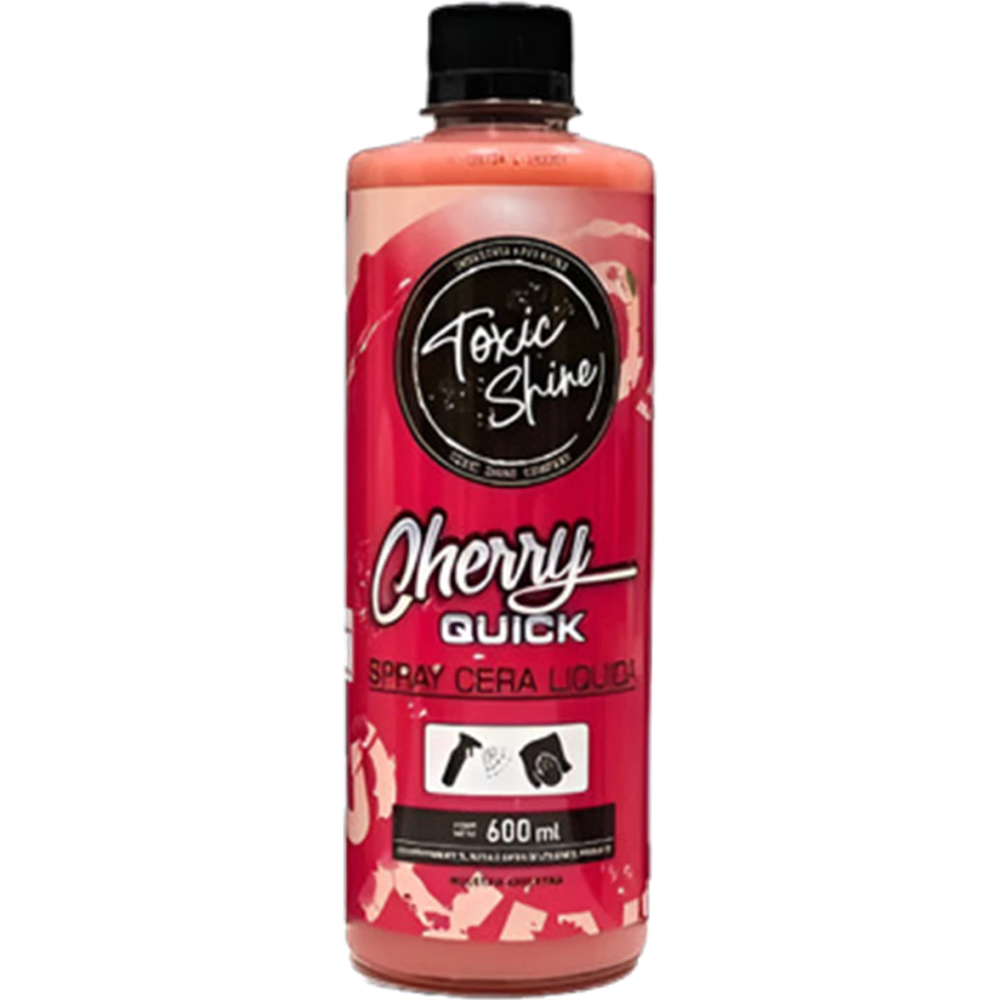

Toxic Shine - Cherry Quick Detailer 600ml

Precio: $12.500 ARS
El Cherry Quick Detailer de Toxic Shine es un abrillantador y finalizador rápido formulado a base de polímeros sintéticos y cera de carnauba. Diseñado especialmente para otorgar un brillo profundo, efecto húmedo y una capa de protección antiestática que repele el polvo diario. Resulta ideal para remover suciedad ligera, marcas de agua y huellas dactilares entre lavados, dejando un acabado sumamente suave al tacto y un característico aroma a cereza. Es seguro para aplicar sobre cualquier tipo de pintura, vidrios, plásticos y tratamientos cerámicos previos.